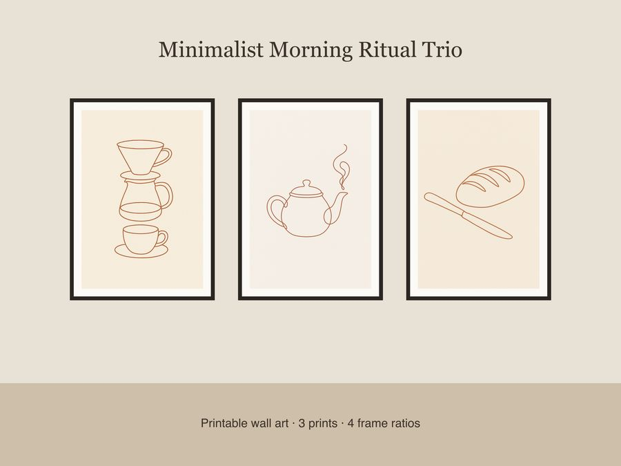

$5.99
View on EtsySlow down your mornings with this calm coffee-shop-chic trio, perfect for a kitchen, reading nook, or breakfast corner that celebrates simple rituals. This set features single continuous line-art illustrations in warm terracotta ink on soft cream paper, with no shading, generous negative space, and a subtle asymmetry for an organic, hand-drawn feel. What's included: • 3 unique designs — pour-over coffee dripper & cup, teapot with curling steam, loaf of bread beside a butter knife • Each design in 4 frame ratios — 2x3, 3x4, 4x5, and 11x14 • 12 total high-resolution JPEG files at 300 dpi, ready to print How to use: Download your files instantly after purchase, then print at home, at a local print shop, or through an online printing service (such as Printful or Walgreens). Simply select the frame ratio that matches your frame size, or trim to fit. License: These files are for personal use and small-business commercial use (up to 500 units sold). Please do not resell, redistribute, or share the files themselves. Honest note: These designs were created by our shop with the help of AI tools as part of our design process. No physical print or frame is included — this is a digital download only.